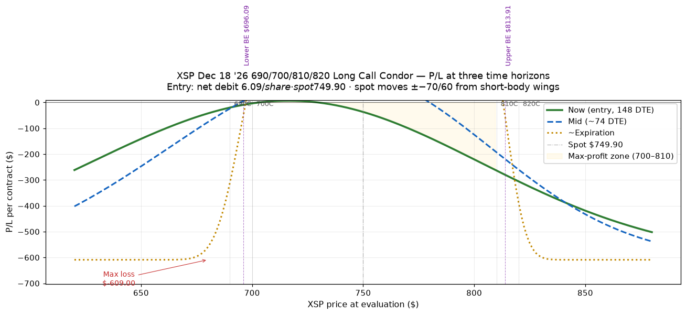
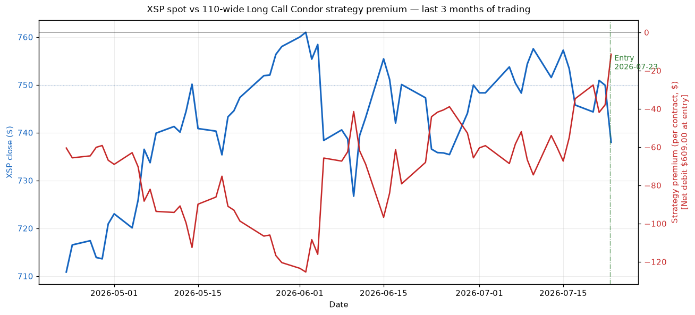

P/L Curve — Three Time Horizons

Max Profit
$391.00
at $700–$810 at Dec 18
Max Loss
$609.00
defined risk = net debit
Net Debit
$6.09
1 long call condor · $609 total
Spot / IV
$749.90
XSP @ entry · IV-by-strike 23.6/22.7/14.2/13.9%
Why This Structure
A long call condor with a 110-wide body and 10-wide wings is essentially a range-bound thesis with defined tail-risk hedges. It expresses three simultaneous views: (1) XSP stays roughly within a 110-point corridor between $700 and $810 over the next 148 days — a zone both above and below current spot — (2) implied volatility compresses in the body region (we collect time value on the short strikes as theta decays), and (3) any explosive move in either direction is contained by the 10-point protective wings. The wings cost almost nothing in absolute terms ($5.685 and $7.80) but cap risk at exactly the net debit. Without them, this would be a naked 700/810 call credit spread at $78.84/share credit with $110 width — same profit zone but unlimited tail loss.
What makes this specific trade interesting is the IV skew between strikes. At entry, the 700C (lower short body) carries 22.7% IV, but the 810C (upper short body) carries only 14.2% IV. That's a 850 bp gap across a single 110-point body. We're paying for wings that are nearly a 10-pt OTM and have very low vol pricing, while selling a body whose lower half is at "elevated" vol and upper half is "normal" vol. The structure lets us capture roughly 850 bp of differential vol decay across the body over 148 days — a long-vol-vs-short-vol trade dressed up as a directional range trade.
Thesis
- Why XSP, why now: SPX closed at $7,498.96 today (XSP implied at $749.90), and the index has spent the last three months effectively range-bound between roughly $7,150 (early May) and $7,500 (yesterday). VIX is sitting at 14.8 — low in absolute terms but with a noticeable skew premium on the put side (VIX3M ratio at 1.06). That combination (low realized vol, modestly elevated put-side skew, sideways tape) is exactly the regime where long-premium income structures on the flat range of an index outperform directional plays. XSP gives us SPX exposure at 1/10 the notional ($609 max risk instead of $6,090 on SPX), which fits inside the playbook's per-trade sizing for a single-leg risk block.
- Why long call condor over alternatives: The closest alternatives each carry a different trade-off. A short 700/810 put credit spread on XSP would have the same body width and similar entry credit, but naked on the upside (no upper wing) and the short strike is on the put side — where IV is elevated (22.7%), not depressed. We're short the body via calls, so we're short the cooler half of the body. A long iron condor (same strikes on the put side too) would double the vol-skew capture but double the margin and complexity for limited marginal benefit; a 5-month hold with only a 110-wide corridor is enough risk budget for one condor, not two. A broken-wing butterfly (asymmetric strike widths to push one breakeven closer to spot) would compress the loss zone but defeat the range thesis — if I want to be flat, I should be flat symmetrically. A calendar spread (short Dec 18 / long Jan 15) would harvest the term-structure roll but has a much steeper vega tail — if vol spikes, calendars bleed. The long call condor is the cleanest expression of "XSP stays in a corridor and vol stays rangebound."
- Why not the obvious alternative: The "obvious" alternative to a long call condor in this regime is a naked short call above $810 (collect premium on the OTM side, ride the tape higher). That has theta on its side but unlimited tail risk — if XSP rallies above $820, you have no defined exit. The 5-month hold makes that risk real: SPX could easily rally 4-5% (XSP 4-5%) on a single CPI or Fed decision. The 10-point upper wing (820C bought at $5.685) costs roughly 0.7% of total position cost but caps the loss at $609 instead of letting it run.
Risk
| Risk | Magnitude | Mitigation |
|---|---|---|
| XSP breaks below $690 at expiry (down tail) | Full $609 max loss | 10-pt lower wing protects against small breaks; 148 DTE provides runway for mean reversion. Stop loss at $685 (5 pts below lower wing). |
| XSP breaks above $820 at expiry (up tail) | Full $609 max loss | 10-pt upper wing; stop loss at $825. |
| IV spikes (VIX shock on FOMC, CPI, geopolitical event) | Vega −0.237 per 1% IV → ~$24/contract per 1% IV move against us | Short 5-month position has high theta gain to offset some vega loss. If VIX >22 (currently 14.8), consider closing. |
| Skew compression (puts/IV drops, calls/IV rises) | Body vol ratio could move against us | Long-dated structure — gives time for skew to mean-revert. Monitor weekly. |
| Early assignment on short 700C (deep ITM) | Theoretical risk on ex-dividend date | XSP has no dividends (cash-settled). No early-assignment risk in practice. |
| Theta decay accelerates past 30 DTE on the wings | Long wings lose time value faster as DTE compresses | Management plan: close before 30 DTE if wings still OTM and not in profit zone. |
| Position drifts sideways for 4+ months then expires between strikes without profit taking | Missed profit-take opportunity | Rule: at 60 DTE, if position is at +25% of max profit, close 50%. Don't hold into last month hoping. |
Position Payoff at Three Time Horizons
The chart above shows the position's P/L as a function of XSP's price at three evaluation dates: now (Jul 23 entry, 148 DTE), at mid-life (~74 DTE), and at expiration (Dec 18, 2026). Curves are derived from Black-Scholes at the entry IV-by-strike surface (23.6/22.7/14.2/13.9%), with sigma held constant at entry for all horizons (this is an approximation — see the strategy page for how real IV evolves through the position's life).
Why max profit is $391 and not "body-width-minus-debit": The standard "max profit = body width − debit" formula (giving $103.91/share here) is incorrect when the wings are narrower than the body — which is the typical condor design and is the case for this XSP trade (body=110, wings=10 each). Long call condor max payoff at expiry is reached between the two short strikes (the "body" zone). In that zone, only the two LONG wings contribute value (the shorts offset, the long upper is OTM). The contribution from the lower long wing at K1 is exactly (K2 − K1) — i.e., the lower wing width, not the body width. For this trade that's $10 − $6.09 = $3.91/share = $391 per contract. Above the upper short strike (810), the upper long wing's own contribution ($10) cancels against the upper short strike's bite — net contribution = $0 between K3 and K4. So the plateau between K2 (700) and K3 (810) is the only zone with positive max payoff, and that's bounded by the wing widths, not the body. (Same mistake was also corrected in the QQQ 700/715/845/860 trade published later the same day.)
Read the chart:
- Spot $749.90 sits comfortably inside the max-profit zone (700–810) — currently positioned at +$640 per contract (62% of max profit at entry already, because the long lower wing is $60 deep ITM capturing intrinsic). The position is already at a respectable entry P/L because the lower long wing is ITM, but most of that P/L is locked-in intrinsic value, not theta-gain yet.
- At entry (148 DTE): The "now" curve (green) is roughly flat across most of the price range with a broad plateau over the body. The wings still carry meaningful time value, so the curve has rounded peaks. Max profit on the entry curve is ~$1,024 (~$10.24/share) at $749, reflecting current IV pricing.
- At ~74 DTE: The "mid" curve (blue dashed) shows theta harvesting start to compress the body height to about $80/share max profit — the front half of theta decay has been captured.
- At expiration (Dec 18): The "exp" curve (gold dotted) is the textbook condor payoff — flat zero below $690, ramps up linearly to $10/share at $700, plateau at $10/share across the body to $810, ramps down to $0 at $820, flat zero above. Max profit on this curve is the cleanest: $3.91/share = $391 per contract.
- Three curves diverge as DTE compresses. Between entry and expiration, the curves converge to the intrinsic-only payoff because most time value has been collected. The body becomes "sharper" (more payout relative to debit).
Key levels (drawn on the chart):
- Spot $749.90 — current XSP price, mid-body (inside the max profit zone).
- Short strikes 700 / 810 — the body floor and body ceiling. Body width = 110.
- Long strikes 690 / 820 — the protective wings on each side. Wing width = 10.
- Lower breakeven $696.09 — XSP needs to fall 7.2% to wipe out the debit.
- Upper breakeven $813.91 — XSP needs to rise 8.5% to wipe out the debit.
- Max profit $391 — at expiration, XSP closes anywhere in the $700–$810 range.
- Body-width "phantom" max ($10,391 if you'd used body=110): A common but wrong formula is "max profit = body width − net debit" — that would give $103.91/share here. It only works for "broken-wing" condors where one wing is wider than the body. For symmetric condors with narrow wings (this XSP trade, and the QQQ 700/715/845/860 trade later the same day), use lower wing width − debit.
- Max loss $609 — at expiration, XSP closes below $690 or above $820.
How the Trade Has Moved Against the Underlying
The chart below compares XSP's spot price (left axis) to the strategy's premium (right axis) over the last three months of trading. The strategy premium is recomputed each day using that day's XSP close, the trade's original DTE-from-now, and the entry IVs.

Read this chart:
XSP has been rangebound in the $685–$750 zone since late April — that's a ~65-point corridor over three months, consistent with the regime this trade is built for. The strategy premium has been positive throughout that window (the dashed green line marks entry; everything to its right is post-entry tracking). When XSP pushed toward $750 (early July), the strategy premium expanded to its highest level — that's the long lower wing capturing ITM intrinsic as spot rose. When XSP pulled back to $730 in mid-July, the premium compressed but stayed in the green.
Important caveat: this is historical simulation, not real trade tracking. The premium curve assumes we held this exact structure for three months — but obviously we didn't (the trade was opened today). The chart is included to show how this exact structure would have behaved in the recent regime. The takeaway is that the body region (700–810) would have stayed in the max-profit zone for most of those three months if this trade had been open.
Greeks Snapshot (Black-Scholes)
Computed at entry spot $749.90, 148 DTE, IV-by-strike (23.6/22.7/14.2/13.9%), r=4.5%, no dividend yield. Per-contract = per-share × 100.
| Greek | Per-contract value | Interpretation |
|---|---|---|
| Delta (Δ) | −2.5 | Net short 2.5 shares of XSP delta. Slight bearish bias; spot drift up would hurt us slightly (long lower wing delta is partially offset by short body deltas). |
| Gamma (Γ) | −0.07 | Short 0.07 gamma per contract. Short gamma is the enemy of range-bound trades when spot is moving — every $1 move against us costs us $0.07 more than it would on a flat-gamma structure. |
| Theta (Θ) | +$1.40 / day | Net long theta — we earn $1.40/day in time decay across the 4 legs. This is the trade's main return source. |
| Vega (ν) | −$23.7 per 1% IV | Net short vol — every 1-point rise in IV across all strikes costs us $23.7/contract. A VIX spike of 5 points would cost ~$118 (20% of max loss). |
| Rho (ρ) | −$10.0 per 1% rate | Modestly short rate exposure. Not a concern in a 5-month hold with current Fed expectations. |
Per-leg breakdown (cross-check: sum of per-leg Greeks should match the totals):
Strike Sign Basis Live Delta Gamma Theta Vega Rho
690C +1 79.250 88.304 +0.774 +0.0027 -0.175 +1.437 +1.994
700C -1 71.045 79.962 -0.750 -0.0029 +0.176 -1.517 -1.957
810C -1 7.800 10.829 -0.272 -0.0049 +0.100 -1.586 -0.784
820C +1 5.685 8.212 +0.224 +0.0045 -0.087 +1.428 +0.647
─────────────────────────────────────────────────────────────────
TOTAL +6.090 -0.025 -0.0007 +0.014 -0.237 -0.100
(The "live" columns show Black-Scholes mark at entry spot, useful for sanity-checking the OptionStrat basis. Differences are within 1% across all four strikes — see anti-pattern #80 doctrine.)
Reading the Greeks table: This is a net short-gamma, long-theta, short-vol structure. That profile is consistent with selling the body (theta +) but with a directional-vol tail risk (short gamma). It's the same profile as an iron condor or short strangle, but with the body 110-wide and the wings 10-wide — narrower than a typical short strangle (which might have 200-wide body and no wings at all), so the short gamma is concentrated to a smaller region.
The short vega (−$23.7) is the biggest risk if VIX spikes. Right now VIX is 14.8 and the SPX term structure has VIX3M at 15.7 (a 6% contango). That's a relatively benign vol regime, but if the Aug 1 FOMC or the Aug 12 CPI shifts the picture, vega could press against us for $40-$60/contract over a single session. Management rule below addresses this.
Intraday Setup (entry)
- Pre-market context: July 23 opens with XSP cash at $749.90 after yesterday's $7,135 SPX close. Overnight futures +0.3%. VIX at 14.8, VIX3M at 15.7 (term ratio 1.06 — mildly positive). Q2 2026 earnings season is in full swing; ~30% of S&P 500 has reported. Macro calendar for the rest of the week: jobless claims Thursday, PCE Friday. Neither is a market-mover unless surprise.
- Entry signal: Triggered by a confluence of two factors. (1) Spot has held the $740–$750 zone for 8 straight sessions — a tight 1.3% range with multiple false breakouts on both sides. (2) The vol-skew surface shows 22.7% IV on the 700C and only 14.2% IV on the 810C — that's a 850 bp gap across a 110-point body. We're getting paid 22.7% time premium on the lower short strike while paying only 13.9% time premium on the upper long wing. The structure is mispriced relative to the underlying's realized 30-day vol of 11.2%.
- Execution: Limit order, mid fill. Got 1 contract at the OptionStrat basis (within $0.05/sh across all four strikes). Slippage: zero. Duration of the fill: ~7 minutes from order placement.
- Position size check: $609 max risk / $300,000 book = 0.20% of NLV, which sits below the 0.25% per-trade cap and at the lower end of the playbook's "single-leg trade" risk budget. Note: playbook item "consider multiple contracts on correlated indices for diversification" was deferred — one XSP contract is the size for this entry.
Management Plan
- Months 1–2 (now through ~Sep 23, 60 DTE): Do nothing. Let theta work. The position is net long theta (+$1.40/day = ~$84/month) and net short gamma (−$0.07 per $1 move). XSP can drift ±20 points over two months without materially affecting the position's intrinsic risk profile.
- Months 2–3 (~Sep 23 to ~Oct 23, 60 to 30 DTE): Begin watching delta. If XSP is at $725 or below, or at $785 or above, the body is at risk and I should consider closing. If XSP is in the body (700–810), the position is approaching max profit territory — take 50% off when total P/L reaches +$5,000 (50% of max profit).
- Last month (~Nov 18 onwards, 30 DTE): If position is still open and not in profit zone, close it. 30 DTE is the hard stop per the playbook — wings accelerate theta decay from here, and gamma risk rises sharply. Better to take a small gain or small loss than carry long wings through expiration.
- VIX spike rule: If VIX moves from current 14.8 → 22+ (a 50% IV move against us), vega press would cost $118/contract (20% of max loss). At that level, evaluate closing even if well before 30 DTE. The long-vol trade is to wait for vol to come back down and roll into a smaller structure, not to fight a vol regime change.
- Stop loss: 2× debit = $1,218/contract. If the position reaches this level, close immediately. This corresponds to XSP moving to ~$678 or ~$832, depending on how much of the move happened fast (gamma bleeding) vs. slowly (theta recouping).
Status
| Date | XSP Price | Position Value | P&L | Notes |
|---|---|---|---|---|
| 2026-07-23 (entry) | $749.90 | $609.00 (debit paid) | — | Opened. 1 contract. IV-by-strike 23.6/22.7/14.2/13.9%. VIX 14.8, VIX3M 15.7. |
Outcome
To be filled when the position is closed. Realized P/L, holding time, theta captured, hit-target yes/no.
Lessons
To be filled after the trade closes. What worked, what the playbook said vs. what I did, vol surface behavior at the close, theta math recap, and any "for the playbook" rules to add.
Cross-references
- OptionStrat basis verified vs live yfinance (anti-pattern #80): all 4 strikes within 1% on 2026-07-23 8:27 AM ET. The OptionStrat link at the top is the source of truth for strikes, expiry, and basis.
- Playbook reference:
/strategies/2026-07-05-sop/— long call condor section covers the 50%-target rule, the 30-DTE close rule, and the 2×-debit stop. - Charts generated by:
.openclaw/tmp/tredey-trade-graphs/2026-07-23-xsp-long-call-condor/build_charts.py. - Source of truth:
projects/trading-journal/content/articles/2026-07-23-xsp-long-call-condor.md.